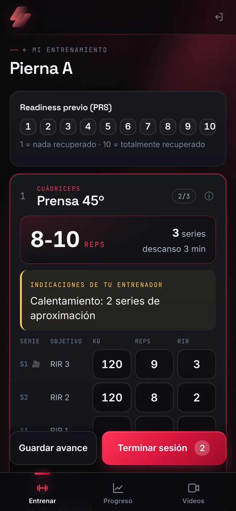
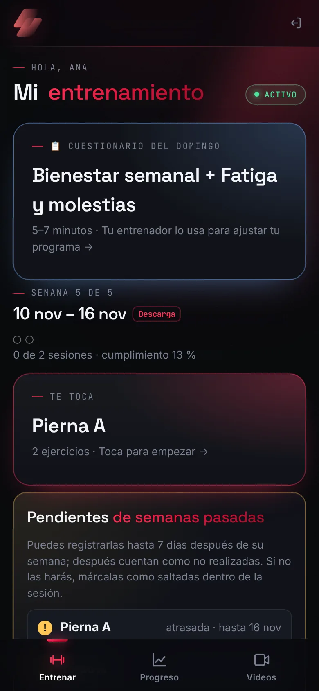
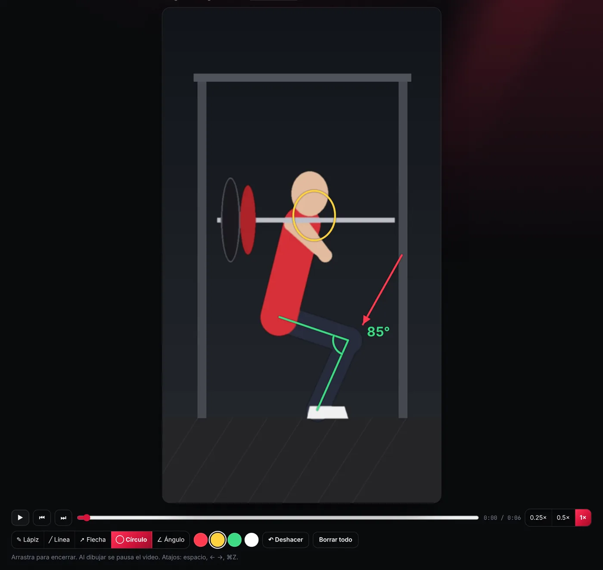
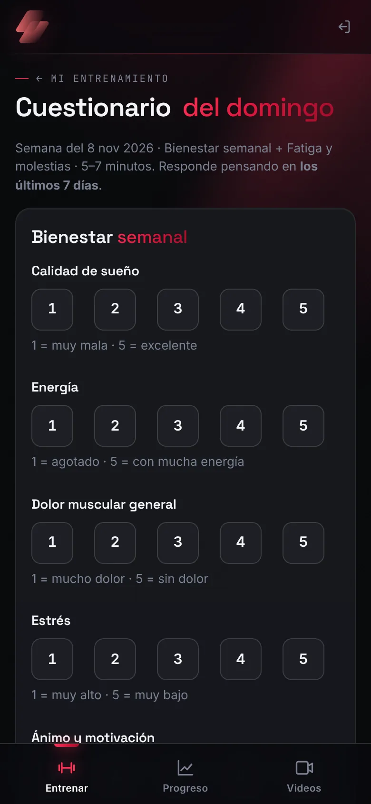
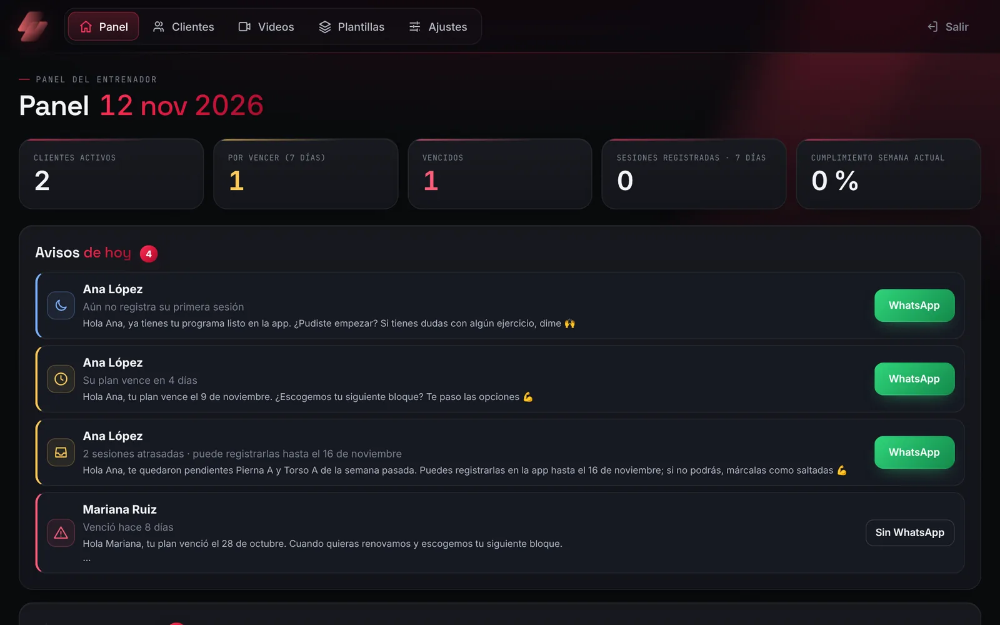
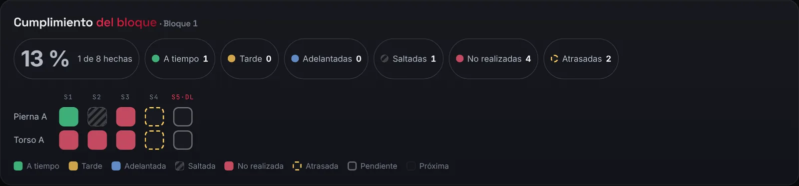

He desarrollado un ecosistema de entrenamiento para ti.
Un sistema propio que conecta tu programa, tu registro, tu técnica y tu recuperación en un solo lugar. Lo diseñé para que cada decisión de tu entrenamiento se tome con datos, no con suposiciones. Incluido en tu asesoría.
Basado en evidenciaiPhone y AndroidSin descargar de tiendasFunciona sin señalAvisos en tu celularKg o lbReporte mensual


01 — Por qué lo desarrollé
El programa es solo una parte del proceso.
Un buen programa de hipertrofia depende de lo que pasa después de escribirlo: cómo lo ejecutas, cómo te recuperas y qué tan rápido se ajusta. Cuando esa información vive dispersa, se pierde.
Antes
El programa, en un PDF o una hoja de cálculo.
Tu registro, en una libreta o en notas sueltas.
Tu técnica, en videos perdidos en el chat.
Tu recuperación, en lo que recordabas contarme.
Los ajustes, al final del bloque.
→
Con el ecosistema
Tu bloque completo, semana por semana, en tu celular.
Cada serie registrada y comparada con la anterior.
Tu técnica revisada sobre tu propio video.
Tu bienestar y fatiga medidos cada semana.
Los ajustes, cuando los datos lo indican.
Por eso no adapté una app genérica: desarrollé un sistema propio, construido sobre la misma metodología con la que programo, para que nada de tu proceso quede fuera.
Qué implica para ti
Entrenar dentro de un sistema cambia los resultados.
Desliza para ver más →
Decisiones con datos
Cada ajuste a tu programa se basa en lo que registraste y en cómo respondiste, no en suposiciones ni en la memoria.
Ajustes a tiempo
Si algo no va bien —fatiga, dolor, estancamiento— lo vemos esa misma semana, no al final del bloque.
Técnica antes que carga
Corregimos la ejecución sobre tu propio video antes de subir el peso, para que el estímulo llegue al músculo correcto.
Claridad total
Siempre sabes qué toca, qué te falta y cómo vas. Sin dudas sobre qué sesión hacer ni con cuánto peso.
Compromiso visible
Tu cumplimiento y tu progreso quedan a la vista de ambos. La constancia se vuelve un dato, no una intención.
Tu historial es tuyo
Cada bloque, cada serie y cada feedback se acumulan: tu entrenamiento se construye sobre lo que ya hiciste.
02 — El fundamento
Cada función responde a un principio.
El ecosistema no mide por medir: mide las variables que la evidencia relaciona con la hipertrofia y con tu capacidad de seguir progresando.
Desliza para ver más →
Sobrecarga progresiva
Sin registro no hay progresión verificable. Cada serie guarda carga, repeticiones y RIR, y el sistema compara tu volumen de carga y tus kilos manejados con la vez anterior para saber si realmente estás progresando, sesión a sesión.
Volumen cuantificado por músculo
El estímulo depende del volumen efectivo. El sistema cuantifica tus series semanales por grupo muscular —ponderadas por cercanía al fallo— para distribuir el volumen con precisión.
Proximidad al fallo
La intensidad del esfuerzo importa tanto como la carga. Cada serie se prescribe y se registra con RIR (incluido el fallo), y la progresión ajusta series o esfuerzo semana a semana.
Autorregulación
Entrenar más no siempre es mejor. El bienestar semanal y la fatiga por músculo cada dos semanas permiten ajustar volumen y descanso antes de que la fatiga se acumule.
La técnica como variable
La ejecución determina qué músculo recibe el estímulo y reduce el riesgo de lesión. Por eso la revisión en video —cuadro a cuadro, con ángulos— es parte del sistema, no un extra.
Adherencia medible
El mejor programa es el que se cumple. El sistema sigue tu calendario, mide tu cumplimiento y me avisa a tiempo si algo se atrasa, para ajustar el plan a tu realidad.
Cómo funciona
Un ciclo que se ajusta a tu respuesta real.
El ecosistema funciona como un circuito: cada semana, lo que haces alimenta la siguiente decisión.
Desliza para ver más →
01
Planifico
Diseño tu bloque: ejercicios, series, rangos, RIR, descansos y estrategia de progresión, con el volumen cuantificado por músculo.
02
Entrenas y registras
La app te dice qué toca y registras cada serie en segundos, incluso sin señal. Grabas las series que te pido revisar.
03
Medimos
Volumen de carga y kilos manejados, cumplimiento, cuestionarios de bienestar y fatiga, y revisión de tu técnica en video.
04
Ajusto
Con esos datos ajusto volumen, intensidad, ejercicios y descansos. Y el ciclo vuelve a empezar, semana tras semana.
03 — Lo que vives como atleta
El ecosistema, en tu bolsillo.
Todo el sistema se usa desde una app pensada para el gym: con una mano, entre serie y serie y en segundos.
Registro de la sesión
Enfocado en el ejercicio que estás haciendo.
El ejercicio actual se abre en grande y los demás se pliegan. Sin buscar, sin perder el hilo.
Semáforo en cada serie: verde si subes, amarillo si igualas y rojo si bajas frente a la vez anterior.
Rango de repeticiones e indicaciones de tu entrenador bien visibles.
RIR con “F” de fallo y la marca de la vez anterior en cada ejercicio.
Guardar avance sin salir; terminas cuando acabes, aunque sea más tarde.
Máquina ocupada: cambias por la alternativa que tu entrenador definió.
Cronómetro de descanso en cada ejercicio, y registras en kilos o libras.

Feedback de técnica
Como revisarte en persona.
Subes tu serie desde la app y recibes un video con la explicación, no solo un “bien hecho”.
Cámara lenta y cuadro a cuadro para ver lo que a velocidad normal no se nota.
Ángulos, flechas y trazos sobre tu propio video, con mi voz.
Se optimiza en tu teléfono antes de subir: rápido y sin gastar tus datos.
Privado: solo tú y tu entrenador lo ven; se borra a los 60 días.

Cuestionarios
Tu recuperación también cuenta.
Dos a siete minutos el domingo. Con tus respuestas ajusto tu programa antes de que el cansancio se acumule.
Fatiga y molestias cada 2 semanas: recuperación y pump por músculo, y dónde te molesta y con qué ejercicio.
Alertas para tu entrenador si algo no va bien, para actuar a tiempo.
Desliza para ver más →
Sabes qué te toca
La app sigue el calendario de tu bloque: tu semana, tu siguiente sesión y lo que tengas pendiente. Puedes ponerte al día hasta 7 días después o adelantar la semana siguiente, y te llega un aviso el día que te toca.
Registro serie por serie
Kilos o libras, repeticiones y RIR (con “F” de fallo) en botones grandes. Cada serie se colorea contra la vez anterior, tienes cronómetro de descanso y guardas tu avance cuando quieras.
Feedback de técnica
Grabas la serie que te pido y la subes desde la app. Te respondo con un video: cámara lenta, cuadro a cuadro, ángulos, flechas y mi explicación en voz.
Cuestionarios que ajustan tu plan
Cada domingo, bienestar (sueño, energía, estrés…). Cada dos semanas, fatiga y molestias por músculo. Con eso ajusto series, descanso y progresión.
Tu progreso, con datos
Volumen de carga y kilos manejados por ejercicio, con semáforo de progresión; tu cumplimiento del bloque, tu historial completo y tu reporte de cada mes.
Funciona sin señal
En el gym sin cobertura registras igual: se guarda en tu teléfono y se sube sola al recuperar la conexión. Se instala como app en iPhone y Android.
04 — Tu progreso, a la vista
Cada serie te dice si vas mejorando.
Ves tu avance mientras entrenas, descansas lo justo y recibes en tu celular lo que importa: qué te toca, tu feedback y tu mes en números.
Desliza para ver más →
Registro en vivo
Verde, amarillo o rojo, en cada serie.
Cada serie se colorea contra la misma serie de la vez anterior, y en cada campo vacío ves en gris lo que hiciste esa vez.
Prensa 45°kglb
SubeIgualBaja
SerieKgRepsRIR112510221209231158F412092
RIR indicado 2 · reportado 1
Cronómetro de descanso
Descansa lo justo.
Vibra y suena al terminar, y te avisa aunque tengas el celular bloqueado.
1:24Descanso · Prensa 45°
−15 s+15 sSaltar
DC Entrenamiento · ahora⏱ ¡Descanso terminado!Prensa 45° · Serie 4
Notificaciones
Te avisa cuando importa.
Qué sesión te toca, tu feedback de técnica, tu cuestionario del domingo y tu reporte del mes.
DC Entrenamiento · ahoraHoy te toca: Pierna A 💪Semana 3. Tu sesión ya está en la app.
DC Entrenamiento · 2 hTu feedback está listo 🎥
DC Entrenamiento · domTu cuestionario del domingo
Mi progreso
Tu avance por ejercicio.
Volumen de carga (carga × repeticiones) y kilos manejados contra la vez anterior, con semáforo de progresión.
Volumen de carga+6.4 %
Kg manejados+3.1 %
Press bancaMÁS kgIGUAL reps
Remo con barraIGUAL kgMÁS reps
SentadillaMENOS kgMÁS reps
Reporte mensual
Tu mes, en números.
Cada mes, en la app y en tu correo: sesiones, volumen de carga, kilos manejados, bienestar y un mensaje de tu entrenador.
Tu octubre en números
Sesiones11/12
Volumen de carga+8 %
Kg manejados+5 %
Bienestar7.8/10
Mensaje de tu entrenadorGran mes: subiste en 9 de 12 ejercicios. En noviembre vamos por más volumen de espalda.
Ejemplos ilustrativos de pantallas de la app.
05 — Para entrenadores
El mismo sistema, del lado del entrenador.
Así trabajo yo con cada atleta: programación, seguimiento, revisión de técnica y gestión, conectados en un mismo panel.


Desliza para ver más →
Panel con avisos
Quién vence, quién no ha entrenado, sesiones atrasadas, videos por revisar y alertas de dolor o fatiga. Con un toque, el mensaje de WhatsApp ya escrito.
Programación por bloques
Constructor de sesiones con base de 300+ ejercicios, superseries, descansos, plantillas y progresión de acumulación o intensificación, con cuantificación de volumen en vivo.
Cumplimiento visible
Mapa semanas × sesiones por atleta: a tiempo, tarde, adelantada, saltada o no realizada. Sabes al instante quién necesita seguimiento.
Revisión de video profesional
Estudio con cámara lenta, cuadro a cuadro, lápiz, flechas, círculos y medición de ángulos; grabas tu explicación y le llega al atleta con aviso por correo.
Pagos y vencimientos
Registro de pagos, fecha de vencimiento automática y correos de aviso 7 días antes y el día que vence. Habilitas o pausas el acceso de cada atleta.
Datos para decidir
Volumen de carga, kilos manejados y semáforo por ejercicio, PRS y sRPE, tendencias de bienestar, sugerencias de volumen por músculo y explorador de entrenamientos con filtros.
Prospectos y entrevista inicial
Quien llena la entrevista entra como prospecto y lo conviertes en cliente con un toque. Su consulta inicial queda en su ficha, con alerta si reporta una lesión.
Correos a tus clientes
Avisos informativos por audiencia —activos, por vencer, vencidos o los que elijas—, con vista previa, prueba a tu correo y baja automática.
Reporte mensual y avisos push
Cada cliente recibe su mes en números con tu mensaje. A ti te avisan al celular los videos nuevos, las alertas rojas y los prospectos.
¿Eres entrenador y quieres usarla con tus atletas?
Hoy el ecosistema funciona con los atletas de mi asesoría. Pronto lo abriré a otros entrenadores, con tu propia cuenta y tus atletas. Escríbeme y te aviso primero.
No. Está incluido en los planes de asesoría (Fase Inicial y Programa Completo) mientras tu plan esté activo.
¿En qué se basa la metodología?
En los principios con mayor respaldo en la literatura sobre hipertrofia: sobrecarga progresiva, volumen por grupo muscular, proximidad al fallo (RIR), autorregulación según tu recuperación y calidad técnica. El sistema existe para aplicarlos con datos de forma individual.
¿Tengo que descargarla de la App Store o Google Play?
No. Entras desde el navegador en app.dcentrenamiento.com y la instalas en tu pantalla de inicio; se abre como cualquier app y se actualiza sola.
¿Funciona si en mi gym no hay señal?
Sí. Tu registro se guarda en el teléfono y se sube automáticamente cuando recuperas conexión. Para subir videos sí necesitas internet (mejor con Wi-Fi).
¿Quién puede ver mis videos?
Solo tú y tu entrenador. Se guardan cifrados en tránsito, con enlaces temporales, y se borran automáticamente a los 60 días; las notas escritas se conservan.
¿Qué pasa cuando termina mi plan?
Conservas tu historial, tus gráficas y tus feedbacks. Para registrar sesiones nuevas renuevas tu plan: la app te muestra los planes y cómo pagar.
¿La app me avisa cuándo me toca entrenar?
Sí, si activas las notificaciones: te avisa la sesión del día, las sesiones pendientes de la semana, tu feedback de técnica, tu cuestionario y tu reporte del mes. En iPhone, primero instala la app en tu pantalla de inicio (iOS 16.4 o posterior).
¿Puedo registrar en libras?
Sí. En cada ejercicio eliges kilos o libras y la app lo recuerda; tu historial, tu progreso y tu reporte se muestran en esa unidad.
Olvidé mi contraseña, ¿qué hago?
En la pantalla de entrada pulsa “Olvidé mi contraseña” y te llega un correo para crear una nueva.
Soy entrenador, ¿puedo usarla?
Pronto. Escríbeme por WhatsApp desde la sección “Para entrenadores” y te aviso en cuanto abra cuentas para otros entrenadores.
Este ecosistema lo desarrollé para ti.
Elige tu asesoría y entrena dentro de un sistema que planifica, mide y se ajusta a ti, semana a semana.